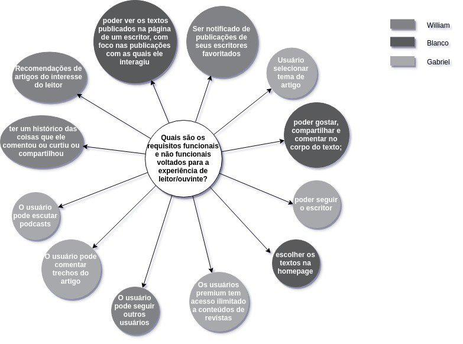
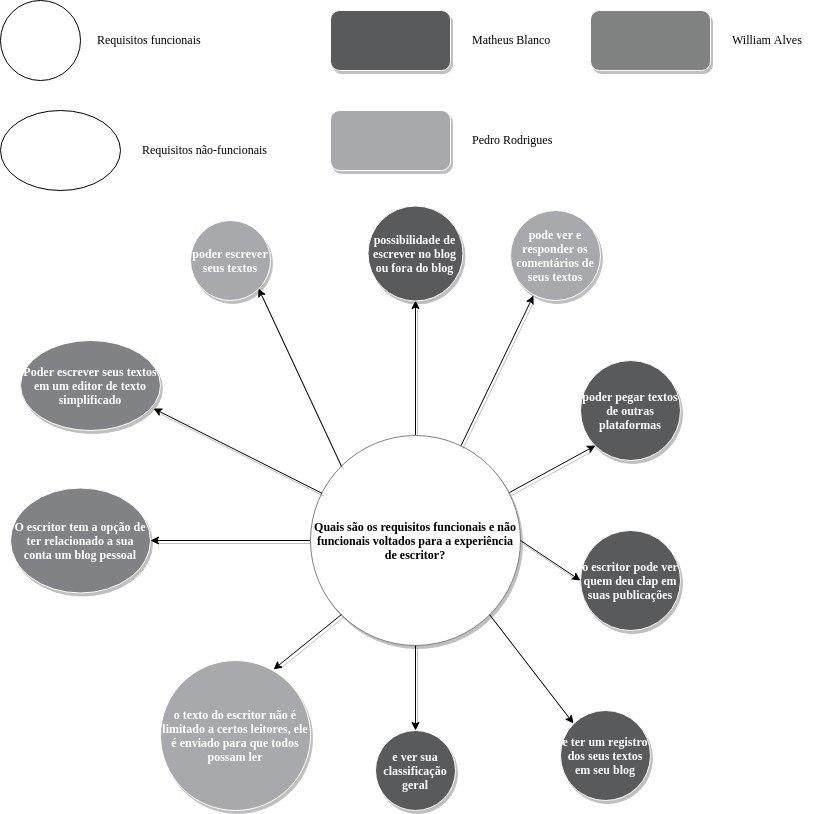

Versionamento de edições
| Data | autor | Descrição | Versão |
|---|---|---|---|
| 09/04/2019 | William Elias Alves | Inserção dos brainstormings e mindmaps | 0.1 |
| 15/04/2019 | Matheus Salles Blanco | Adição dos requisitos elicitados em cada técnica | 0.2 |
Descrição
Mediante reuniões presenciais e via Hangouts, foram organizados brainstormings. Esses foram feitos mediante a resposta de perguntas favoráveis ao entedimento e elicitação dos requisitos da aplicação MEDIUM.
Escopo
O presente documento foi concebido por meio da aplicação da técnica de brainstorming e representação dos brainstormings via mapas mentais.
Brainstorming 1
Tema: Definição e divisão de tarefas
Como levantar os requisitos?
| Membro | Sugestão |
|---|---|
| william | Dividindo os problemas a serem respondidos por meio de perguntas |
| william e Matheus | Focando em requisitos com foco no leitor e também para o escritor |
| Matheus | Entendendo o funcionamento do site por observação |
| Gabriel | Fazendo a jornada do leitor |
| william | Fazendo a jornada do escritor |
| Matheus | fazendo a jornada de escrever uma história |
| Matheus | fazendo a jornada de pegar uma história de um site externo |
| Matheus | fazendo a jornada de criar o blog |
| william | Todos criarem ao menos três técnicas individualmente |
| william | Criação do questionário em grupo |
| pedro | Estudo de como fazer um questionário |
| Gabriel | Fazendo a jornada do leitor |
| pedro | Criação de prototipação em trio/dupla |
Brainstorming 2
Tema: Elicitação de Requisitos
Ficou decidido pelo grupo um levantamento de requisitos de software ,da aplicação MEDIUM, por meio do brainstorming. Esse levantamento ocorreu sem a utilização direta da aplicação. Decidiu-se que iriamos inicialmente respondendo as perguntas aleatoriamente e posteriormente de uma forma mais organizada.
Quais são os requisitos funcionais e não funcionais da área comum da aplicação?
| Membro | Sugestão |
|---|---|
| william | expor as categorias disponíveis na barra de navegação |
| Matheus | disponibilizar de textos na homepage |
| william | postar textos via stories |
| Matheus | separar os texto por categorias |
| Matheus | acessar o perfil de usuário |
| william | editar seu próprio perfil |
| william | visualizar os perfis de outros usuários |
| william | carregamento eficiente de artigos |
| william | cores monocromáticas na construção básica do site |
| matheus | o design intuitivo e minimalista torna a experiência mais produtiva |
| matheus | A aplicação está disponível em plataformas : web e mobile (ios/android) |
Requisitos Elicitados
| ID | Requisitos Elicitados desta técnica |
|---|---|
| R001 | Responsividade |
| R002 | Portabilidade mobile IOS |
| R003 | Portabilidade mobile Android |
| R007 | Paleta de cores monocromáticas no site |
| R008 | Acessar a área de membro |
| R009 | Visualizar artigos populares |
| R036 | Visualizar perfis de outros usuários |
Brainstorming 3
Tema: Elicitação de Requisitos
Quais são os requisitos voltados ao leitor?
| Membro | Sugestão |
|---|---|
| william | O leitor recebe as notificações de publicações de seus escritores favoritados |
| Gabriel | seguir outros usuários |
| Gabriel | escutar podcasts |
| Gabriel | selecionar tema de artigo |
| Matheus | Escolher os textos na homepage |
| Matheus | seguir o escritor |
| matheus | compartilhar o texto |
| matheus | o leitor poder gostar do texto |
| william | Recomendações de artigos do interesse do leitor |
| william | O leitor recebe as notificações de publicações de seus escritores favoritados |
| Pedro | Os usuários premium tem acesso ilimitado a conteúdos de revistas |
| Matheus | os usuários podem ver os textos publicados na página de um escritor, com foco nas publicações com as quais ele interagiu |
Requisitos Elicitados
| ID | Requisitos Elicitados desta técnica |
|---|---|
| R020 | Visualizar stories publicadas |
| R024 | Aplaudir um texto lido |
| R025 | Compartilhar texto lido no Facebook ou Instagram |
| R026 | Comentar no corpo do texto |
| R027 | receber notificações de textos publicados por autores seguidos |
| R028 | Seguir escritores |
| R029 | Seguir usuários |
| R030 | Escutar podcasts |
| R031 | Selecionar tema de artigos |
| R032 | Visualizar textos publicados por um escritor em seu perfil |
| R033 | Ter recomendações de leituras conforme histórico de leitura |
| R037 | Favoritar publicação |
Brainstorming 4
Tema: Elicitação de Requisitos
Quais são os requisitos para a experiência de escritor?
| Membro | Sugestão |
|---|---|
| Matheus | possibilidade de escrever no blog ou fora do blog |
| Matheus | pegar textos de outras plataformas |
| matheus | ver quem deu clap em suas publicações |
| matheus | ter um registro dos seus textos em seu blog |
| william | O escritor tem a opção de ter relacionado a sua conta um blog pessoal |
| william | Poder escrever seus textos em um editor de texto simplificado |
| Pedro | poder escrever seus textos |
| Pedro | ver comentários de seus textos e responder os comentários de seus textos |
| Pedro | o texto do escritor não é limitado a certos leitores, ele é enviado para que todos possam ler |
| Matheus | ver sua classificação geral |
Requisitos Elicitados
| ID | Requisitos Elicitados desta técnica |
|---|---|
| R017 | Ver status |
| R038 | Visualizar comentários da publicação |
Por onde começar a elicitar os requisitos
Usuário leitor/ouvinte

Área comum
Escritor
